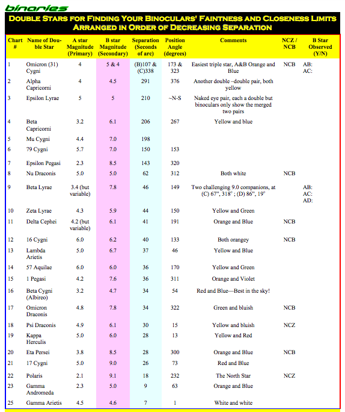

Binarias¶
WDS CATALOG PARA BINOCULARS¶
Ver aqui: https://gist.github.com/miguelvb/4767e0a5fbcbed08b9929950af15d095
Hecho por mi... :-)
Aqui discusión sobre ello: https://www.cloudynights.com/topic/444854-wds-catalog-in-csv-format/
DOUBLE STARS FOR BINOCULARS¶
This entry was posted on October 23, 2008 by The Team at OPT. (https://www.optcorp.com/double-stars-for-binoculars/)
Double Stars For Binoculars Have you ever stepped outside at night and found a clear sky waiting to be explored and yet were too tired from a long day to set up your telescope? Or, perhaps it was winter and besides being cold there was a brisk wind blowing that would make your telescope useless at all but the lowest powers. Regardless of the reason, at times you may want to observe the night sky but are just not willing or able to set up your telescope. For that matter, maybe you don’t even have a telescope but are wondering how much can be seen with your binoculars.
Many amateur astronomers, having used a telescope for some time, have forgotten how much there is to see with their binoculars. Oh yes, they originally learned their way around the sky with them and still use them along side their telescope but what about using them as the primary instrument? Often, after acquiring their telescope, many lose interest in their binoculars and don’t realize that on those nights when you can’t or don’t want to set up your telescope, binoculars can give fine views of many objects such as double stars with very little effort. Although the views may not match those of a telescope, there are at least several dozen double stars that are quite beautiful in binoculars. Convenience is a big advantage of using binoculars for casual astronomy; all you have to do is step outside, point them up and enjoy! Dark skies are just not necessary; most of the double stars listed here are bright enough to be easily found and enjoyed from moderately light-polluted suburban skies. Once you’re acquainted with some of these, you’ll find yourself returning to them like old friends, even when you do set up your telescope.
Equipment¶
Although almost any binocular can be used to observe double stars, some are better than others. Large aperture models, although helpful for fainter pairs, are not necessary for most double star observing and the increased weight makes them harder to hand-hold. Lower power models, although easier to hold steady, do not separate closer double stars enough for a comfortable view. Perhaps the best and most common configuration to use are 10x50s which usually give a field of about five or six degrees). Ten power binoculars are about the highest you can hold steady for extended periods without a tripod and 50mm lenses gather plenty of light for the doubles we will examine. Their 5mm exit pupil is also ideal for suburban skies, giving a nice dark sky background. The quality of the binoculars is important too; cheaper models may not give clean, sharp stellar images. However, the most important factor is not the binocular itself but rather the enjoyment you gain from using it. A useful accessory, which you may already have, is a reclining lawn chair. Laying on your back and resting your elbows on the arms of the chair will result in steadier views and less fatigue on your arms and shoulders. Finally, a good star atlas that plots stars to at least sixth magnitude is needed to find most of our subjects; however even an all-sky map will suffice to locate the brightest pairs.
Although higher power binoculars may allow you to split closer pairs, 10x models will reach to separations of about 40” (if magnitudes are about equal) and thus we will limit our survey to pairs that are wider than this. Apertures of 50mm will comfortably reach to about 8th magnitude from most suburban skies and so we will take this as our limiting magnitude. Note however that the combination of close separation and large magnitude difference will make some of our examples quite challenging. Thus, some faint companions close by bright primaries may be beyond the grasp of smaller instruments (especially in light-polluted locations) but those with larger instruments and/or dark skies will enjoy these challenges. Even with these restrictions, however, there are several dozen nice doubles to examine and enjoy and you may be able to discover a few more. We will begin with the widest, easiest pairs and progress to the closer, more difficult ones, working eastward by season. Of course any object can be viewed at various times of the year simply by altering the time of night you look for it.
FALL: 0 - 4 hours R.A.¶
The double stars most readily visible during fall are those that lie between zero and four hours of right ascension. These vary in separation from the very easy (430”) to good test objects (30-33”). You may like to “warm-up” by enjoying the magnificent Hyades star cluster in Taurus; it has two extremely wide doubles visible in binoculars, Theta (on the “left” side of the “V”) at 337” and Sigma (near Aldebaran) at a whopping 430” separation. This is a great object to share with newcomers to astronomy as brilliant Aldebaran makes it easy to find even in strong light pollution or twilight.
Our next subject, 56 Andromedae, although faint for the naked eye, can be easily found by extending a line from Gamma Trianguli past Beta Trianguli about four degrees (less than one field of view in your binoculars). The delicate orange hues (both are spectral class K) and wide separation of 190” belie the fact that these two stars are not physically associated. If you can’t pickup the open cluster NGC 752 which is adjacent to 56, be sure to return here with your telescope for a fine low-power view.
Moving about 12 degrees south from Beta Trianguli, we come to Alpha Aries (Aries can also be found due west of the Pleiades, a magnificent binocular cluster). Three degrees (or just one half field) to the north we find 14 Aries, a very interesting object. Here the secondary is fairly faint at magnitude 7.7 but should visible an easy 106” away. An even fainter third star of magnitude 8.7 is 93” away from the primary for those with large binoculars or a small telescope. This sytem can thus be used as a good test of the darkness and/or transparency of your skies. Several degrees west of Alpha is Lambda Aries, your first test. The magnitude difference of 2.5, coupled with a separation of only 38” will make this one tough. Ten power binoculars should split this pair without too much trouble but smaller apertures will require considerable patience. Although the primary is brighter than fifth magnitude, the secondary is fainter than seventh. Besides making the split harder, this also tends to diminish the lovely yellow and blue hues apparent in a small telescope. Before leaving Aries, swing back to Alpha, then continue east about 1 1/2 fields and you’ll come to 30 Aries, another test pair. Here the separation is about the same as for Lambda but the magnitudes are more equal. As you gaze at these two F class stars try to grasp the fact that the light you are seeing has traveled thru space for nearly two hundred years before entering your eyes. Interestingly, the primary here is a spectroscopic binary star with a period of about 10 days.
Before moving farther east, let’s note an even closer pair for 10x and higher binoculars: about 11 degrees (or two fields) west of Beta Aries are three stars labeled Psi Pisces 1,2,3. The northernmost of these, upon close inspection, can be seen to be a close binocular double with moderately vivid yellow and blue hues. Have patience when trying to split this pair - only 30” separates the equal components. You’ll probably want to return here with a small telescope for a better view. If you enjoy the challenge of close pairs like this, move about thirteen degrees south and you’ll come to Epsilon Pisces, a bright fourth magnitude star. Continuing another three degrees south will put 77 Pisces in your field of view. These two stars appear much as Psi does but without the colors.
Our final subject for fall is actually in the winter Milky Way but rises fairly early near Capella in Auriga. After stealing a look at the magnificent Pleiades, face east and center your binoculars on Capella (Alpha Aurigae). Note bright Epsilon in the same field and move from it past 59 Perseus to 57 Perseus, a pair of class F stars separated by 116”, a refreshing change from the close pairs we’ve just examined. Can you detect the 0.7 magnitude difference between these two stars?
WINTER: 5 -12 hours R.A.¶
As fall turns to early winter and Orion rises in the east, more double stars for binoculars come into view. Let’s continue our survey with the western star in Orion’s famous belt, Delta Orionis. A class O giant, Delta is about 1500 light-years away and blazes with a luminosity of some 20,000 suns! The bluish companion is 53” north of the primary and if physically associated would lie at a distance of over 27,000 astronomical units or nearly one-half light-year! The brightness of Delta may make it a little difficult to pick out the faint companion. If we now move to the eastern star in the belt, we’ll find Sigma Orionis in the lower right of the field. This remarkable system contains at least five stars although only two will be visible in binoculars. The primary, a class O star, has a luminosity of about 5000 times that of our sun while the binocular companion is no slouch itself, being 600 times as bright as our sun. At a distance of 1400 light-years, the separation of 42” corresponds to a gulf of over 20,000 A.U. between these stars. Although the magnitude separation is not as great as we saw in Delta Orionis, the smaller separation here makes this a moderate challenge as well. Which do you see as better? Be sure to return here with your telescope to examine the other members of this unique system.
Before leaving Orion, shift your gaze to the unmistakable Great Nebula, M42, below the belt stars. Just to it’s south you’ll see bright Iota Orionis accompanied by little-known Struve 747, a pair of fifth and sixth magnitude stars. The close 36” separation will severely challenge observers with 7x or 8x binoculars while 10x will make it a bit easier. Few amateurs seem to pause while observing M42 to spend a moment with this neat system, whether with binoculars or their telescope. It’s even visible on many wide angle photos of the Great Nebula. Be sure to get acquainted and you’ll never look at M42 alone again.
As Orion transits the meridian on cold evenings, look immediately below him for the constellation of Lepus and it’s distinctive central rectangle. The star at the lower left is Gamma Lepus, one of my favorites. This beautiful wide pair is well known for it’s gorgeous colors, generally agreed to be yellow and orange. The two components do share the same proper motion (0.5” per year) and are thus known to be a physical pair even though there is no apparent orbital motion. Parallax measurements give a distance of only about 29 light-years; at this distance the apparent separation of 96” corresponds to about 900 A.U. Even if cold weather discourages you from setting up your telescope, be sure to step outside briefly to enjoy this gem of the winter sky.
As winter progresses, we shift our attention several hours east and a bit north to the small constellation of Canis Minor, dominated by brilliant Procyon. Approximately one field to the east and one-half field to the south of Procyon we find 14 Canis Minor. Although having a generous separation of 95”, the companion is one of the faintest we’ll see at magnitude 8.0. If you have large binoculars and/or dark skies, you may glimpse a third component of magnitude 9 which is 124” from the primary. Averted vision may be needed to see either of these faint companions. While you’re in the area, be sure to visit Gemini to the north for views of it’s famous open clusters.
Looking next to the dim constellation of Cancer, we pause to enjoy the splendid Beehive cluster, M44. Nine degrees north of it we come upon Iota Cancer, a fourth magnitude gem. (If you have trouble finding M44, begin at bright Pollux (Beta Gemini) and move three fields due west to Iota). Keen eyesight along with a steady hold and a generous dose of patience will be required to see the sixth magnitude companion only 31” away from the primary. Here again, you’ll want to revisit this system with a telescope so as to fully appreciate the spectacular orange and blue hues.
The constellation Leo is our next target, our subject brilliant Alpha Leo, better known as Regulus. Eighty-five light-years distant, Regulus is a B type star with a surface temperature of about 13,000 degrees Kelvin and a diameter of about five times that of our sun. The secondary here is over six magnitudes fainter than the dazzling primary, and thus will be harder to spot than you’d think at seventh magnitude. The only factor in it’s favor is it’s generous distance of 177”. Talk about a difference in stellar magnitude! Also in Leo is another favorite of mine, Tau Leo. To find it, begin at Theta at the base of Leo’s “hindquarters” and work carefully south with your star atlas to Iota and then to Sigma. With Sigma at the top of your field, look for a row of four stars curving down and slightly eastward. Tau is the southernmost of the four. With magnitudes of 5.5 and 7.0 and an easy separation of 91”, Tau should be obvious. By the way, Tau is also an excellent telescopic “double double”; don’t miss it with your telescope!
As winter’s deep freeze finally begins to thaw, magnificent Ursa Major rises in the northeast. Our final subject for winter, 65 Ursa Major, is easily found just one field of view southeast of third magnitude Chi Ursa Major which is due south of second magnitude Gamma. This beautiful pair of sixth magnitude suns has a charm all its own and is in fact yet another multiple star in a telescope with the companion splitting into two stars at medium power. What impression do you get from these distant, lonely suns?
Hopefully you’ve enjoyed visiting some of the sun’s nearer neighbors that are attractive double stars in binoculars. In part two of our survey, we’ll continue our journeys to examine and enjoy additional systems in spring and summer skies.
In part one of our survey, we visited eighteen examples of double stars for binoculars in the fall and winter skies. Now we’ll examine twenty four more systems in the rich spring and summer skies.
SPRING: 13 - 17 hours R.A.¶
Nearly every amateur is familiar with Zeta Ursa Major, the wide very wide double star in the handle of the Big Dipper, also known as Mizar and Alcor. With a separation of more than 700” (over 11 minutes of arc!), this is more of a naked-eye object than a binocular double. However, it is another excellent “warm-up” to begin your journey thru spring and summer skies. It is also another ideal object to share with newcomers to amateur astronomy as it is instructive to compare the naked-eye view (most people can resolve it unaided) with the view in binoculars and even a telescope. Mizar, the brighter of the two, is itself a famous telescopic double with a companion 14” away. As Robert Burnham discusses in the “Celestial Handbook”, this was the first double star to be discovered, the first to be photographed, and the first spectroscopic binary to be discovered, meaning that yet another star orbits the primary, too close to be seen in any existing telescope. Immediately east of second magnitude Mizar is fourth magnitude Alcor which shares the same common proper motion thru space with Mizar. At a distance of about 88 light-years the true separation of these stars is thus an astonishing 1/4 light year! Alcor is also a spectroscopic binary thus bringing the total for this system to a remarkable five suns.
One field northeast of Eta Ursa Major (the end star of the Big Dipper’s handle), just over the border into Bootes, we find three bright stars, Theta, Kappa, and Iota Bootes. Iota, the southernmost of the three, has a very wide sixth magnitude companion. Closer inspection will reveal a seventh magnitude star only 39” from the primary. Our next target in Bootes is third magnitude Delta which has a very faint companion 105” from the primary. Here again the faintness of the companion may require dark skies, large binoculars and careful scrutiny to pick out. From Delta, move one field northeast to find Mu, our final stop in Bootes. This star is composed of a F type primary and a G type secondary an easy 109” apart. This secondary is actually composed of two stars very similar to our sun. It is thus quite interesting and instructive to realize that at this distance of 95 light-years our own star would appear much as these do. At this distance the separation from the F class primary is over 3000 A.U. while the two solar type stars are “only” 43 A.U. apart. If you now place Mu at the southern edge of the field, you’ll see Nu Bootes 1 & 2, a very wide pair at the opposite edge of the field. Nu 1 is a very vivid orange while Nu 2 appears blue. There is yet another pair visible in binoculars in the field between 54 Bootes and 6 Corona Borealis. Quite a nice field!
Another nice challenge awaits those who search out Pi Ursa Minor, located near the handle of the Little Dipper, one field north of Zeta Ursa Minor. Only 31 ” separates the sixth and seventh magnitude components, requiring a steady hold and at least 8x. Fortunately, the difference in magnitude is not great and I find this object not too tough at 10x. Here again is another fine pair for telescopes at low powers.
A spring progresses we turn our attention south - all the way down to the constellation of Scorpius. Beta Scorpius is a very fine double for telescopes but too close for our binoculars. However, within the same field of view you’ll see Nu Scorpius and the very wide pair of Omega 1 & 2. You shouldn’t have too much trouble with the sixth magnitude companion which is itself composed of two stars only 3” apart. As we approach the rich, glorious Milky Way there are many, many attractions for binocular users including numerous open star clusters, rich star fields, and even glowing nebulae. Leisurely savoring these galactic showpieces on warm spring evenings can be intoxicating as your mind drifts light-years away to visit other star systems, leaving behind all earthly cares.
If you now extend a line from dazzling Antares (Alpha Scorpius) thru Delta and continue for about three fields (or 18 degrees) you’ll come to Alpha Libra, composed of 8 and 9 Libra which are separated by about 230” - a huge gap. As Phil Harrington points out in “Touring the Universe through Binoculars” (highly recommended) these two stars do seem to form a true physical pair located about 65 light-years distant which translates to an actual separation of 48,000 A. U.! Again we find much food for thought by merely observing with a curious mind and our binoculars. The cream and orange hues here are simply gorgeous and this may also become one of your favorites.
After our journeys to the stars systems of Scorpius and Libra, we swing back north to the vast reaches of the constellation Draco. Five different sights await us, each very different from the others. Begin with Nu Draco, the faintest of the four stars that make up the “head” of the serpent. These two class A stars are virtually identical; shining in our skies at fifth magnitude at a distance of 120 light-years indicates a luminosity of about 11 suns each. Their apparent separation of 62” corresponds to a true separation of about 2300 A.U. Now move your view about two fields west (be careful of your directions in these polar regions) passing Mu Draco and you’ll come to the fine white pair of 16 & 17 Draco, another of my favorites. The wide separation of 91” is a refreshing change from some of the close pairs we’ve examined and like Nu, these two class A stars also appear identical. Next, move seventeen degrees north from Mu (watch those directions) to Psi Draco, a very close 30 ” pair that will require a steady hold to see well. Which of these three pairs is you favorite?
SUMMER: 18 - 24 hours R.A¶
Before moving on to the rich summer Milky Way, let’s take in the two other sights in Draco. The first, 39 Draco, can be easily found by extending a line from Nu Draco past Xi Draco an equal distance. With a separation of 89”, this pair of fifth and seventh magnitude stars should present no problem in splitting (although the secondary may appear faint in smaller binoculars). If we continue our line from Nu and Xi past 39 Draco an equal distance we’ll come to our final stop in Draco, Omicron. With a close separation of 34” and a three magnitude difference, picking up this companion is one of our toughest assignments and will definitely test your growing skills in binocular observing. In fact, you may well prefer this as a telescopic target.
At long last we come to the spectacular, glorious summer Milky Way with its rich star clouds, numerous open and globular clusters, and even some planetary nebula and diffuse nebulae visible in binoculars. These various objects, easily swept up at random or located with a star atlas will provide many enjoyable hours of binocular observing. We, however, will focus on the beautiful double stars visible in these areas, many overlooked because of the other well-known sights.
We begin by exploring the small yet distinctive constellation Lyra, dominated by brilliant Vega. This zero magnitude beacon is the brightest of the three stars in the “Summer Triangle” and is a fine sight in binoculars. As darkness finally falls after a long early summer day, Vega will appear first in the sky and guide you to Lyra. The northeast corner of Lyra’s parallelogram is marked by Delta Lyra, our “warm-up” object, with an enormous gap of 620” between its two stars. The stunning red and blue colors (spectral classes M4 and B2) form a gorgeous contrast which is very easy to see with binoculars and will not be soon forgotten. You’ll surely find yourself returning here again and again to enjoy these gems and to share them with others. The immediate area around Delta is very rich in faint stars, a few of which can be glimpsed in binoculars. Both components of Delta have the same radial velocity, suggesting they may well be physically related despite their enormous separation.
Halfway between Delta and Vega is Zeta Lyra. The sixth magnitude companion is but 44” away from its fourth magnitude primary and thus forms a much closer pair than Delta or Epsilon Lyra, the famous “Double Double”, which is two degrees north. In the “Celestial Handbook”, Robert Burnham tells us that the two binocular components of Epsilon are separated by over 200”, each of these being a telescopic double with separations of 2.6” and 2.8”. Both components of the northern pair are of class A, are separated by over 150 A.U., and the brighter of these two is itself a spectroscopic binary! The southern pair is also composed of two class A stars 165 A.U. apart. It is generally agreed that all four stars are white and all four do share common proper motion thru space though no orbital motion has been detected for the wide binocular pair. At a trigonometrically derived distance of 180 light-years the distance between the wide pair would be over 13,000 A.U. or 0.2 light-years. Surely here is considerable food for though as we gaze at a system of five suns separated by enormous distances and rushing thru space towards us at over 17 miles per second bound only by gravity. Delta, Zeta, and Epsilon all fit easily within one field of view creating a unique and special sight. Savoring these three system and their widely differing appearances is one of the best ways to enjoy a mild summer evening.
But there’s more. Just one field south of Zeta is the equally if not more famous Beta Lyra; although best known for it’s variability (which can be detected with the unaided eye), Beta has a faint companion 47” distant that will challenge even those with large binoculars and dark skies. Once again the large magnitude difference and faintness of the secondary will make this one tough. With at least four binocular doubles, ranging from the very easy to the very difficult, it’s apparent that the small constellation Lyra has much to offer binocular users. Much interesting information about this constellation can be found in “Burnham’s Celestial Handbook” including an outstanding photograph of the entire region.
We now come to another distinctive summertime constellation - Cygnus the Swan, also known as the “Northern Cross”. Encompassing rich areas of the Milky Way, there is much here for the binocular user. We turn first to Beta Cygnus, arguably the most beautiful double star in the entire heavens. It is easily found with the naked eye at the southern end of the constellation or by extending a line from Beta Lyra past Gamma Lyra several fields. Anyone who has seen this pair, especially in a telescope, will not soon forget the vivid orange-yellow and blue hues. Although a bit close for most binoculars at 35” separation, it should not be too hard to split and you should be able to see the colors as well. At a distance of approximately 400 light-years, the true luminosities of these two stars are about 750 and 120 times that of our sun! (Actually, the primary is a spectroscopic binary). This is another fine object to share with others, whether in binoculars or a telescope.
The second object we’ll visit in Cygnus is 16 Cygnus, a pair of fifth magnitude stars 39” apart. You can find this pair by moving your binoculars on field of view north from bright Delta Cygnus. I find this pair quite easy to split in binoculars, no doubt due to the fact that the stars are identical in brightness; how about you? If we now locate Gamma Cygnus at the center of the “cross” and move six degrees (one field) north, we come to the only triple star on our list, magnificent Omicron Cygnus, also known as 31 Cygnus. Words fail to do justice to the beauty of this system. Being a triple star easily seen in binoculars, this system will quickly become one of your favorites as it is mine. The star 31 Cygnus is actually the golden, fourth magnitude primary; 338” away is fifth magnitude 30 Cygnus, a vivid blue, while closer in (107” from the primary)
is a seventh magnitude component. This is one of the few subjects on our list that is not a true physical system but rather a chance alignment of stars; interestingly however, the primary is an eclipsing binary with a period of over 10 years. As darkness finally falls on a long summer day, you’ll find yourself almost instinctively looking for this system and wanting to share it with others.
Our final stop in Cygnus is a “very famous and noteworthy double star” as Burnham well puts it, and “historically one of the most interesting objects in the heavens”, although it will be quite close for even 10x binoculars to resolve. The fame of this pair, 61 Cygnus, lies not in the visual appearance (although I think the twin orange stars are simply gorgeous and not too hard to split) but rather because of a relatively large proper motion (over 5” per year) which indicates intrinsic nearness to our solar system. Separated by about 84 A.U. and requiring over 650 years to complete an orbit, the two K class stars are almost unique on our list in being smaller (about half as big) and less luminous (less than 10% as bright) as our sun. This was the first system to have its distance measured trigonometrically (in 1838) with a modern value of 11 light-years accepted. Of further interest is a third unseen body, detected only by systematic variations in the motions of the visible components. With an estimated mass as low as eight Jupiters, it may be more of a planet or “brown dwarf” than a star. Photos of the large proper motion can be found on page 770 of the “Celestial Handbook” along with much additional information. Imagine then, these two small stars, only 11 light-years away, rushing towards us at 38 miles per second with a dark, unseen companion as you view them in your binoculars.
Our next subject, 57 Aquila, can be found by moving south from bright Altair past Eta Aquila about nine degrees. These two B class stars, separated by only 36”, are seen close at 10x and do share common proper motion thru space. Often overlooked because of more dramatic sights in the summer Milky Way, this fine pair deserves more attention. Here you can “calibrate” your ability to estimate magnitudes by observing a pair of stars exactly one magnitude apart.
Moving southeast just one field from 57 Aquila brings us into the constellation of Capricorn which has two more favorites of mine, both with wide, easy separations - Alpha and Beta Capricorn. Alpha is an optical pair, Alpha 2 (the brighter) being about 100 light-years away while Alpha 1 is perhaps five times as distant! Both are yellow, solar-type G stars a huge 376” apart. In the same field are Nu, Xi 1 & 2, and 3 Capricorn, making for a very lovely field indeed. Beta, our other target here, should also be in the field, being only two degrees south of Alpha! Its yellow and blue hues are nearly as beautiful as other better known examples and its wide separation of 205” (nearly identical with Epsilon Lyra) makes this an ideal showpiece for beginners. Beta is a true physical system about 150 light-years away which makes the primary about 100 times brighter than our sun. These two have been neglected too long; after visiting here once, you’ll return often.
Our final binocular double is also a famous one, although not because it’s a double. As late summer turns to fall, Delta Cepheus becomes visible in the northeast. It is the prototype of the “Cepheid” variable stars which vary in brightness because of pulsation rather than eclipses of a companion. Forty-one seconds of arc from the primary is a sixth magnitude class B star which is thought to be physically bound to the primary although no orbital motion has been detected in over 150 years. It has been pointed out that at a computed separation of over 13,000 A.U. no orbital motion should be evident yet. Although 250 times as bright as our sun, the secondary is only 1/10th as bright as the primary, the class F variable. The primary is usually seen as orange / yellow while the secondary is definitely blue. While enjoying it’s beauty as a double star in your binoculars, you may become intrigued by it’s variability and end up monitoring it’s changes!
Having become acquainted with some of the sun’s nearer neighbors that are interesting and beautiful double stars in binoculars, you’ll probably soon be revisiting the ones you enjoyed the most. Perhaps you’ll abbreviate this listing and concentrate on a handful of your favorites; or perhaps you’ll dig deeper and extend this list by searching out, investigating, and examining other examples ( try Rho Pisces, Zeta Leo, Gamma Ursa Minor, Nu Corona Borealis, Alpha Vulpecula, Pi Pegasus, or Kappa Pisces). Even on cloudy nights you’ll enjoy visiting these fascinating star systems as an armchair astronomer by using various references like “Burnham’s Celestial Handbook” or others. The most important thing, however, is that you enjoy exploring these distant objects with nothing more than your binoculars.
Double Stars for Binoculars¶
object R.A. Dec Mags Sep Comments
Psi Pisces 01h03m 21 12' 5.6, 5.8 30" Yellow, blue
77 Pisces 01h03m 04 40' 5.9, 6.4 33" Near Epsilon
56 Andromeda 01h53m 37 30' 5.8, 6.1 190" Orange, orange
Lambda Aries 01h55m 23 20 4.8. 7.3 38" Yellow, blue
14 Aries 02h10m 26 55' 5.1, 7.7 106" Faint triple
30 Aries 02h35m 24 25' 6.6, 7.3 39" Yellow, lilac
Theta Taurus 1&2 04h25m 15 45' 3.4, 3.8 337 Orange, white
57 Perseus 04h30m 43 00' 6.1, 6.8 116" Yellow, yellow
Sigma Taurus 1&2 04h40m 15 15' 4.7 5.1 430" Near Aldebaran
Delta Orion 05h30m -00 20' 2.2, 6.8 53" West belt star
Struve 747 05h33m -06 00' 5.5, 6.5 36" Near Iota Ori
Gamma Lepus 05h42m -22 30' 3.6, 6.2 96" Yellow, orange
14 Canis Minor 07h57m 02 00' 5.5, 8.0 95" Faint triple
Iota Cancer 08h45m 28 55' 4.2, 6.6 31" Orange, blue
Alpha Leo 10h05m 12 13' 1.4, 7.6 177" Regulus
Tau Leo 11h25m 03 10' 5.5, 7.0 91" Tele dbl/dbl
65 Ursa Major 11h53m 46 45' 6.5, 6.8 63" Tele triple
Zeta Ursa Major 13h22m 55 10' 2.3, 4.0 700" Mizar & Alcor
Iota Bootes 14h15m 51 35' 5.0, 7.5 39" Test for 7x
Alpha Libra 1&2 14h50m -15 50' 2.8, 5.2 230" Cream, orange
Delta Bootes 15h15m 33 00' 3.5, 7.5 105" Faint secondary
Mu Bootes 15h25m 37 35' 4.5, 6.7 109" Telescopic triple
Pi Ursa Minor 15h32m 80 37' 6.1, 7.0 31" Test for 10x
Nu Scorpius 16h10m -19 20' 4.0, 6.3 41" Telescopic quad
16, 17 Draco 16h35m 53 00' 5.5, 5.6 91" White, white
Nu Draco 1&2 17h30m 55 10' 5.0, 5.0 62" White, white
Psi Draco 17h43m 72 10' 4.9, 6.1 30" Test for 10x
39 Draco 18h23m 58 45' 5.0, 7.5 89" Faint secondary
Epsilon Lyra 1&2 18h45m 39 35' 4.5, 4.7 208" Tele dbl/dbl
Zeta Lyra 18h45m 37 35' 4.3, 5.9 44" By Epsilon
Beta Lyra 18h48m 33 18' 3.5, 7.8 47" Famous var.
Delta Lyra 1&2 18h50m 36 40' 4.3, 5.6 620" Vivid colors
Omicron Draco 18h50m 59 20' 4.6, 7.6 34" Not easy
Beta Cygnus 19h30m 28 00' 3.2, 5.4 35" Orange, blue
16 Cygnus 19h41m 50 25' 5.0, 5.0 39" Test for 7x
57 Aquila 19h52m -08 20' 5.0, 6.0 36" Close in 10x
Omicron Cygnus 20h12m 46 35' 4, 5, 7 338,107" Beautiful triple
Alpha Cap 1&2 20h15m -12 42' 3.6, 4.3 376" Yellow, yellow
Beta Capricorn 20h20m -14 55' 3.1, 6.2 205" Yellow, blue
61 Cygnus 21h07m 38 45' 5.2, 6.0 30" Both orange
Delta Cepheus 22h25m 58 10' 4.0, 6.3 41" Orange, blue
Binocular Doubles¶
http://www.carbonar.es/s33/binodoubles/Binodoubles.html
This is another projects of double stars, this time for binocular observers. The list comes from the famous Philip S. Harrrington book: Touring the Universe thorough Binoculars. As usually, don’t hesitate to send your observations to our e-mail list: http://www.egroups.com/group/33-doubles Only precede the title of the message with the following word: Bino. As oposed to the rest of our group’s observing projects, this one is opened all year, since it covers all the sky in the Northern Sky (a lot of stars are also visible from South latitudes).
You can use any size of binoculars to observe these stars. With a pair of good 10x50 you’ll probably be able to observe every double in this list, but there are plenty of material to be observed with 8x32 or even 8x24 instruments. Users of 20x60 or even 25x100 monsters will also find atractive targets here.
Sharp splitting, Luis Argüelles
Name Cons R.A. (2000) Dec (2000) Mag Sep PA
56 And 01 56.2 +37 15 5.7-6.0 190" 300 (1928)
15 Aql 19 05.0 -04 02 5.5-7.2 38" 209 (1959)
OSS 178 Aql 19 15.3 +15 05 5.7-7.8 90" 268 (1925)
Lambda Ari 01 57.9 +23 36 4.9-7.7 37" 46 (1933)
30 Ari 02 37.0 +24 39 6.6-7.4 39" 274 (1937)
S 656 Boo 13 50.4 +21 17 6.8-7.3 86" 208 (1923)
Iota Boo 14 16.2 +51 22 4.9-7.5 39" 33 (1942)
Delta Boo 15 15.5 +33 19 3.5-8.7 105" 79 (1976)
Mu Boo 15 24.5 +37 23 4.3-6.5 108" 171 (1956)
OSS 36 Cam 03 40.0 +63 52 6.8-8.6 46" 69 (1923)
S 436 Cam 03 49.3 +57 07 6.5-7.3 58" 75 (1975)
11 Cam 05 06.1 +58 58 5.4-6.5 180" 8 (1924)
Struve 1051 Cam 07 26.6 +73 05 7.1-7.8 31" 82 (1935)
OSS 90 Cam 08 02.5 +63 05 6.0-8.4 49" 82 (1924)
Burnham 584 Cnc 08 39.9 +19 33 6.9-7.2 45"-93" 156, 241 (1952)
Iota Cnc 08 46.7 +28 46 4.2-6.6 31" 307 (1968)
17 CVn 13 10.1 +38 30 6.0-6.2 84" 297 (1922)
Alpha1+2 Cap 20 18.1 -12 33 3.6-4.2 378" 291 (1924)
Beta1+2 Cap 20 21.0 -14 47 3.4-6.2 205" 267 (1922)
OSS 26 Cas 02 19.7 +60 02 6.9-7.4 63" 200 (1925)
OSS 1 Cep 00 14.0 +76 02 7.6-7.9 76" 103 (1923)
37 Cet 01 14.4 -07 55 5.2-8.7 50" 331 (1931)
17 Com 12 28.9 +25 55 5.3-6.6 145" 251 (1928)
32+33 Com 12 52.2 +17 04 6.3-6.7 95" 49 (1922)
H V 38 CrB 16 22.9 +32 20 6.3-8.8 34.7" 19 (1914)
OSS 182 Cyg 19 26.8 +50 09 7.3-8.5 73" 300 (1956)
Beta (Albireo) Cyg 19 30.7 +27 58 3.1-5.1 34" 54 (1967)
Omicron1 Cyg 20 13.6 +46 44 4-7-5 107"-338" 173, 338 (1926)
OSS 207 Cyg 20 22.9 +42 59 6.6-8.5 93" 63 (1920)
61 Cyg 21 06.9 +38 45 5.2-6.0 29" 195 (1976)
S 752 Del 20 30.2 +19 25 6.6-7.0 106" 288 (1915)
Struve1516 Dra 11 15.4 +73 28 7.6-8.1 36.2" 102 (1940)
OSS 123 Dra 13 27.1 +64 44 6.7-7.0 69" 147 (1924)
16 + 17 Dra 16 36.2 +52 55 5.4-5.5 90" 194 (1956)
Nu Dra 17 32.2 +55 11 4.9-4.9 62" 312 (1955)
Psi Dra 17 41.9 +72 09 4.9-6.1 30" 15 (1958)
Struve2278 Dra 18 02.9 +56 26 7-8-9-10 37"-34"-201" 26, 35, 191 (1949)
39 Dra 18 23.9 +58 48 5.0-7.4 89" 21 (1956)
Omicron Dra 18 51.2 +59 23 4.8-7.8 34" 326 (1949)
Gamma Equ 21 10.3 +10 08 4.7-5.9 353" 153 (1922)
Burnham 1042 Eri 03 58.6 -02 39 7.5-8.5 56" 93 (1913)
Omicron2 Eri 04 15.2 -07 39 4.4-9.5 83" 104 (1970)
62 Eri 04 56.4 -05 10 5.5-9.1 67" 75 (1913)
Nu Gem 06 29.0 +20 13 4.2-8.7 113" 329 (1924)
Zeta Gem 07 04.1 +20 34 3.8-8.0 96" 350 (1925)
Struve1090 Gem 07 26.5 +18 31 7.3-8.2 61" 97 (1921)
Alpha Gem 07 34.6 +31 53 1.9-8.8 73" 164 (1955)
37 Her 16 40.6 +04 13 5.8-7.0 70" 230 (1932)
h 99 Hya 08 37.8 -06 48 6.8-9.1 61" 202 (1918)
27 Hya 09 20.5 -09 33 5.0-6.9 229" 211 (1923)
7 Leo 09 35.9 +14 23 6.2-10.0 41" 80 (1946)
Alpha Leo 10 08.4 +11 58 1.4-7.7 177" 307 (1924)
Tau Leo 11 27.9 +02 51 5.1-8.0 91.1" 176 (1932)
Burnham314 Lep 04 59.0 -16 23 5.9-8.2 53" 34 (1914)
S 476 Lep 05 19.3 -18 31 6.2-6.4 39" 18 (1952)
h 3780 Lep 05 39.3 -17 51 6-9-8-8 89"-76"-129" 136, 7, 299 (1916)
Gamma Lep 05 44.5 -22 27 3.7-6.3 96" 350 (1957)
SHJ 179 Lib 14 25.5 -19 58 6.4-7.6 35" 296 (1955)
Alpha1+2 Lib 14 50.9 -16 02 2.8-5.2 231" 314 (1913)
Iota Lib 15 12.2 -19 47 5.1-9.4 58" 111 (1919)
SHJ 195 Lib 15 14.5 -18 26 7.1-8.1 47" 140 (1916)
5 Lyn 06 26.8 +58 25 5.3-7.9 96" 272 (1924)
Epsilon1+2 Lyr 18 44.3 +39 40 5.0-5.2 208" 173 (1955)
Zeta Lyr 18 44.8 +37 36 4.3-5.9 44" 150 (1955)
Beta Lyr 18 50.1 +33 22 3.3v-8.6 46" 149 (1955)
Delta1+2 Lyr 18 54.5 +36 54 5.6-4.5 630"
OS 525 Lyr 18 54.9 +33 58 6.0-7.7 45" 350 (1935)
OSS 181 Lyr 19 20.1 +26 39 7.6-7.4 58" 3 (1923)
Zeta Mon 08 08.6 -02 59 4.3-7.8 67" 245 (1936)
Rho Oph 16 25.6 -23 27 5-8-7 151"-156" 0, 253 (1925)
36 Oph 17 15.3 -26 36 5-6-8 732"-208" 280, 315 (1905)
53 Oph 17 34.6 +09 35 5.8-8.5 41" 191
S 694 Oph 17 52.1 +01 07 6.9-7.1 82" 237
23 Ori 05 22.8 +03 33 5.0-7.1 32" 28
Delta Ori 05 32.0 -00 18 2.2-6.3 53" 359
Struve 747 Ori 05 35.0 -06 00 4.8-5.7 36" 223
42 + 45 Ori 05 35.4 -04 50 4.7-5.3 6'
Theta1+2 Ori 05 35.4 -05 25 4.9-5.0 135" 314
Theta2 Ori 05 35.4 -05 25 5.2-6.5 52" 92 (1937)
75 Ori 06 17.1 +09 57 5.4-8.5 117" 159
85 Peg 00 02.2 +27 05 5.8-8.6 76" 330 (1932)
3 Peg 21 37.7 +06 37 6.0-8.3 39" 349 (1934)
Epsilon Peg 21 44.2 +09 52 2.4-8.4 143" 320 (1913)
Struve 3007 Peg 23 22.8 +20 34 6.6-8.9 88" 311(1956)
57 Per 04 33.4 +43 04 6.1-6.8 116" 198 (1913)
Psi1 Psc 01 05.6 +21 28 5.6-5.8 30" 159 (1832)
77 Psc 01 05.8 +04 55 6.8-7.6 33" 83 (1833)
H VI 119 PsA 22 39.7 -28 20 6.3-7.3 87" 160 (1951)
Alpha PsA 22 57.6 -29 37 1.2-6.5 7200"
Epsilon Sge 19 37.3 +16 28 5.7-8.0 89" 81 (1949)
Theta Sge 20 09.9 +20 55 6.5-7.4 84" 223 (1949)
54 Sgr 19 40.7 -16 18 5.4-8.9 46" 42 (1932)
Nu Sco 16 12.0 -19 28 4.3-6.4 41" 337 (1955)
Theta Ser 18 56.2 +04 12 4-5-8 22"-414" 104 (1973), 56 (1927)
21 + 22 Tau 03 46.1 +24 32 5.6-6.4 168"
Eta Tau 03 47.5 +24 06 2.85-6.3-8.3-8.5 117"-181"-191" 289, 312, 295 (1903)
27 + BU Tau 03 49.2 +24 03 3.7-5.0 300" 180
H VI 98 Tau 04 15.5 +06 11 6.3-7.0 66" 315 (1937)
Phi Tau 04 20.4 +27 21 5.0-8.4 52" 250 (1925)
Kappa Tau 04 25.4 +22 18 4.4-5.4 340" 173, (1923)
Theta1+2 Tau 04 28.7 +15 52 3.8-3.4 337" 346 (1921)
88 Tau 04 35.7 +10 10 4.3-8.4 70" 299 (1920)
OSS 67 Tau 05 48.4 +20 52 6.1-8.6 76" 161 (1933)
S 598 UMa 09 28.7 +45 36 5.5-8-10 77"-84" 162 (1924)
65 UMa 11 55.1 +46 29 6.7-6.5 63" 114 (1969)
Wnc 4 UMa 12 22.4 +58 05 9.0-9.3 50"
Zeta UMa 13 23.9 +54 56 2.3-4.0 709" 71 (1966)
Struve1831 UMa 14 16.2 +56 43 7.1-6.6 108" 222 (1956)
Pi-1 UMi 15 29.2 +80 27 6.6-7.3 31" 80 (1959)